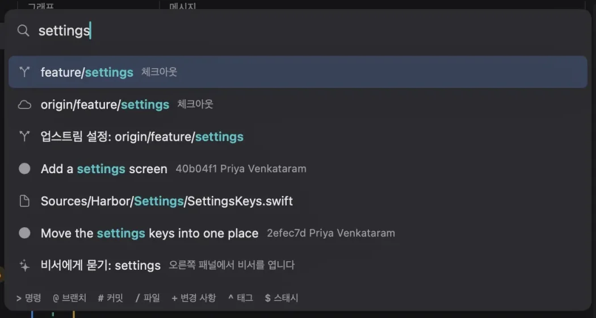

가이드사용
단축키
자주 쓰는 키입니다. 전체는 앱에서 ⌘/로 봅니다.
빠른 열기#
⌘P로 열고 입력하면 브랜치, 커밋, 파일, 명령을 한꺼번에 찾습니다. 찾은 줄에서 ↩를 누르면 체크아웃하거나 엽니다.

앞에 기호를 붙이면 한 종류만 찾습니다.
| 기호 | 찾는 것 | 예 |
|---|---|---|
> | 명령 | >push |
@ | 브랜치 | @feature/ |
# | 커밋 | #tokenizer |
/ | 파일 | /NoteStore |
+ | 변경된 파일 | +README |
^ | 태그 | ^v1.0 |
$ | 스태시 | $shorter |
자주 쓰는 키#
| 동작 | 키 |
|---|---|
| 명령 팔레트 | ⇧⌘P |
| 빠른 열기: 저장소, 브랜치, 커밋, 파일 | ⌘P |
| 저장소 추가 / 복제 | ⌘O / ⇧⌘O |
| 가져오기 / 풀 / 푸시 | ⇧⌘F / ⇧⌘L / ⇧⌘K |
| 새 브랜치 / 브랜치 전환 | ⌘B / ⇧⌘B |
| 실행 취소 / 다시 실행 | ⌘Z / ⇧⌘Z |
| 스태시 / 최근 스태시 꺼내기 | ⌥⌘S / ⇧⌥⌘S |
| 왼쪽 패널 / 오른쪽 패널 | ⌘J / ⌘K |
| 비서에게 묻기 | ⇧⌘I |
| Git 콘솔 | ⇧⌘C |
| 새로고침 | ⌘R |
| 모든 단축키 | ⌘/ |